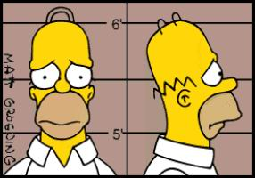

Forums galactiques > Assemblée Galactique : diplomatie officielle > Les graines de la haine
Pages : 1
| Alnia. Respect diplomatique : 867  27/08 ETU 19:42  | Score : 11 Détails "Every action scene should have a soundtrack"
http://roadrun.com/darkpassionplay (s'il ouvre un popup, c'est normal, c'est la chanson !) En bas de la popup, vous avec un petit lecteur média, vous passez à la chanson nommée "Amaranth". Et le premier qui dit que je fais ce texte juste pour vous faire profiter du nouvel album de Nightwish, il a gagné un Pépito. ^^ Petit à petit, les graines de la haine éclosent et stérilisent le sol dans lequel elles ont poussé. La haine est comme le Chêne, immense, imposante, et mortelle à tout ce qui tente de pousser à côté d'elle. Les humains haïssent les déviants, au point de devenir aussi violents et inhumains qu'eux. Quelle est la différence entre les deux ? C'est la question qu'Alnia se posait de temps en temps. En fait, non, elle connaissait la réponse. Les humains sont pires que les déviants, plus fourbes, plus hypocrites, plus faibles. Et elle aussi les haïssait. La haine dirigeait la vie de quiconque tentait de se servir d'elle. Et Alnia s'en rendait peu à peu compte. Elle avait tué Grabeuh, qu'elle avait aimé. Elle avait rasé les planètes de certains de ses alliés. Et maintenant, elle allait mettre sa propre galaxie à feu et à sang, pour la grandeur, pour la déviance, pour sa haine des humains. | ||
| Helheim de Jackail Respect diplomatique : 2 28/08 ETU 13:18 | Score : 2 Détails *Le siége de sorbier sur lequel reposait Helheim de Jackail aprocha d'Alnia perdue et seule.*
-Pourquoi ne me raconteriez vous pas tout sa? Oui venez allonger vous sur ce divan rouge comme vous l'aimer tant. *Dès qu'un serviteur eu aporté un bloc note et un crayon, Helheim s'installa.* | ||
| saom. Respect diplomatique : 2 28/08 ETU 13:27 | Score : 2 Détails chère alnia,
vous dites TOUT les humains mais.... peut être une très grandes partie mais pas tous, regardez moi par exemple je ne vous connais pas, mais j'ai entendu parlé de vous. Et je pense que tous les humains ne vous haïsse pas. Donc ne vous mettez pas quelque chose dans le crane qui n'est pas forcement vrai. | ||
| Alnia. Respect diplomatique : 867 28/08 ETU 14:49 | Score : 1 Détails Dans mon code couleur, le vert c'est le narrateur... Normalement, dans ce texte, Alnia n'a pas prononcé un seul mot... mais bon, trop tard, on va faire comme si...
Tiens ? Un psychiatre ? Ca ressemble a psychopate, vous trouvez pas ? J'ai toujours détesté les psychiatres... Ils pensent pouvoir tout comprendre des gens, mais finalement n'arrivent qu'à trouver des évidences... Je n'ai pas besoin de la moindre thérapie. Je suis en paix avec moi-même, ce qui se traduit par une entrée en guerre contre la galaxie. Et plus vous essayerez d'aller fouiller loin dans ma tête, plus vous aurez du mal à ressortir... Saom, vous avez raison sur un point, pas tous les humains... Demain, vous aurez la liste des méritants qui auront droit au salut. Les autres pourront commencer à prier leurs dieux, car je serai sans pitié... | ||
| Helheim de Jackail Respect diplomatique : 2 28/08 ETU 15:04 | Score : 0 Détails désolé pour le vert du narrateur
*Helheim d'un geste de la paume réajusta ses lunettes* -Je n'ai aucunement besoin d'en sortir pourvu que je puisse vous être utile. Pourquoi aimez vous autant le rouge et la grossiéreté de cette voie qui vous accompagne? Avez vous été élevé par des hommes ? N'avez vous jamais connue la douceur d'un sein maternel ? La caresse d'une main dans vos cheveux de soie ? | ||
| Alnia. Respect diplomatique : 867 28/08 ETU 15:18 | Score : 0 Détails Méfiez vous, si je vous enferme dans mon esprit, vous risquez d'y laisser soit la raison, soit la vie... J'ai des pouvoirs mentaux bien plus puissants que ce que vous pouvez immaginer et j'ai de quoi vous rendre fou à lier si vous essayez de plonger trop profond dans mon esprit torturé...
Déja, je ne suis pas une Red Tantra... J'aime le rouge, car c'est la couleur du sang, ma boisson favorite... Le sein maternel a été déchiqueté par mes soins... Et je dois confesser y avoir pris tellement de plaisir que j'ai jetté mon dévolu sur le second pour lui réserver le même sort... Avant d'égorger celle qui les portait et qui se disait ma mère... Une humaine... J'avais beau avoir huit ans, je m'en souviens comme si c'était hier... Et je serais prête à recommencer si on pouvait la ranimer... Elevée par des hommes... Oui, j'ai été élevée par des hommes... dans une cage, sujette à toutes sortes d'expériences sur mes pouvoirs psioniques. Pire qu'un animal, une souris de laboratoire. Leur mort a été un des moments les plus forts de ma vie, comme si c'était une renaissance... Quant à la main dans mes cheveux, oui, j'aime qu'un fringant jeune homme me fasse du charme, me baise pendant des heures. A condition que lorsque je lui arrache le coeur à mains nue après l'acte sexuel, il continue de hurler alors que son coeur est dans ma main. C'est à ce moment là en général qu'à lieu l'orgasme chez moi... Vous savez, être la fille du dieu du chaos et de la destruction, c'est jouissif... | ||
| Helheim de Jackail Respect diplomatique : 2 28/08 ETU 15:43 | Score : 0 Détails *Un serviteur aporta une bassine et un cahier de tache. Après avoir vomi une quantité impressionante de tofu jaune, Helheim présenta à sa patiente la carnet*
-C'est bien vous progressez deja dans votre térapie ! Regardez ces taches. Voilaaa dite moi ce que vous aimeriez voir... | ||
| W. Harrold Respect diplomatique : 1  28/08 ETU 16:16 | Score : -4 Détails Tcho !!!!!!!!!!!!!!!!!!!!!!!!
Et Banane, tu commences à me les casser* se psy ! (*pour les gros boulets de service, je parle de ce qui se trouve, entre leurs jambes). | ||
| SpyWaRe Respect diplomatique : 424  28/08 ETU 18:41 | Score : 1 Détails
Commandant Helheim de Jackail, pensez-vous qu'une thérapie sera suffisante pour assainir le cerveau de la Commandante Alnia.? Une lobotomie serait beaucoup plus appropriée! mais vous n'êtes pas chirurgien, quel dommage! Enfin merci d'essayer... Alnia. vous nous faites part de votre intention d'être sans pitié, heureusement car la pitié est réservée aux faibles, une des catégories que vous avez dans votre ligne de mire, je n'aurais osé croire que vous ressentiez un tel sentiment. Vous ressentez de la haine, quel bonheur! Avoir la faculté de ressentir ses sentiments, et de pouvoir les expliquer, est un début d'humanisation. | ||
| Mnémosyne Respect diplomatique : 77  28/08 ETU 18:53 | Score : 0 Détails Sans pitié, Haine... que dire? C'est navrant de voir des "personnes" comme vous, à moins que "personnes" ne soit trop... comment dire ??? humain ??? Le therme chose sans coeur serait le plus aproprié je pense.
Alors, à quand les attaques ??? | ||
| saom. Respect diplomatique : 2 28/08 ETU 19:22 | Score : 1 Détails Alors la je ne comprend plus!!!
Vous haïssiez les humains et vous allez saluer quelques humains?? soit vous êtes déséquilibrer ou je n'est pas tout compris! mais dans le plus profond de son esprit saom. penser plutôt au déséquilibre d'alnia mais Helheim de Jackail va sûrement nous le confirmer a la fin de la thérapie | ||
| Alnia. Respect diplomatique : 867 28/08 ETU 21:08 | Score : 0 Détails Mnémosyne, j'ai répondu à votre question dans une autre salle.
Les attaques ont commencé, demandez à Davian Thule ou N'Tyrr s'ils ont apprécié mes BHA et mes croiseurs. Et demandez aussi au gouvernement si ma "blagounette" lui a fait plaisir... Oui, les quelques milliers de tirs ioniques qu'il a reçu dans divers systèmes... Et c'est sans compter sur les 344 BHA en route pour le système 0 qui devraient tomber... dans une heure ou deux grosso modo... Et comme je l'ai dit ailleurs, je vous aurais volontier mis aux premières loges de feux d'artifice ainsi qu'aux premiers combats aux portes de vos mondes si j'avais eu le temps de vous chercher... Mais bon, si vous désirez tant mourir... J'exaucerai votre souhait, ne vous en faites pas... Je sais faire preuve de bonté parfois... Tout comme de pitié. Mais attention, lorsque j'ai pitié, je ne laisse pas vivre comme vous le feriez, j'abrège les souffrances. C'est une autre vision de cette émotion. Peut-être pas la même que vous ? | ||
| Mnémosyne Respect diplomatique : 77 29/08 ETU 09:43 | Score : 1 Détails Je prefère mourir avec mes amis plutôt que de les voir se faire exterminer par une folle égocentrique...
| ||
| Inamor Sarec Respect diplomatique : -54  31/08 ETU 15:16 | Score : -9 Détails ALNIA, JE T'AIMEEEUUUUUUH !
|
Pages : 1
Forums galactiques > Assemblée Galactique : diplomatie officielle > Les graines de la haine